정사각형 · 위치 복구
실제 모서리 쪽으로 이동해 3px 안으로 복구 · 위치 오차 5.10→0.94px
셀 전체 114점 · SQUARE_YOLO:024410:native0
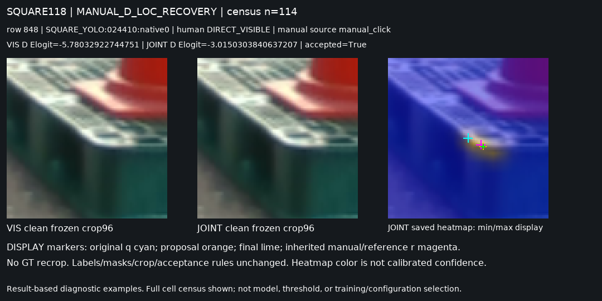
V263 공동 모델의 저장된 실사 crop을 재배치했습니다. 새 학습·추론·문턱 변경은 없습니다.
보이는 모서리의 위치를 잘 고치는 사례는 있습니다. 동시에 보이는 점을 외부 가림으로 부르거나, 정확하던 점을 잘못 옮기거나, 가린 점 대신 주변 경계를 고르는 사례도 남습니다. 여기서 가림은 외부 가림이며 자기 가림과 합치지 않았습니다.
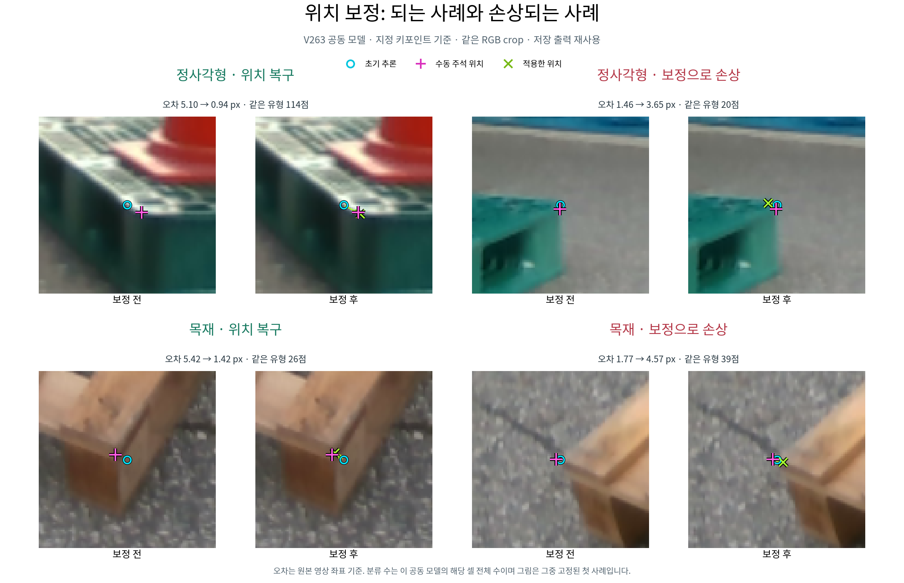
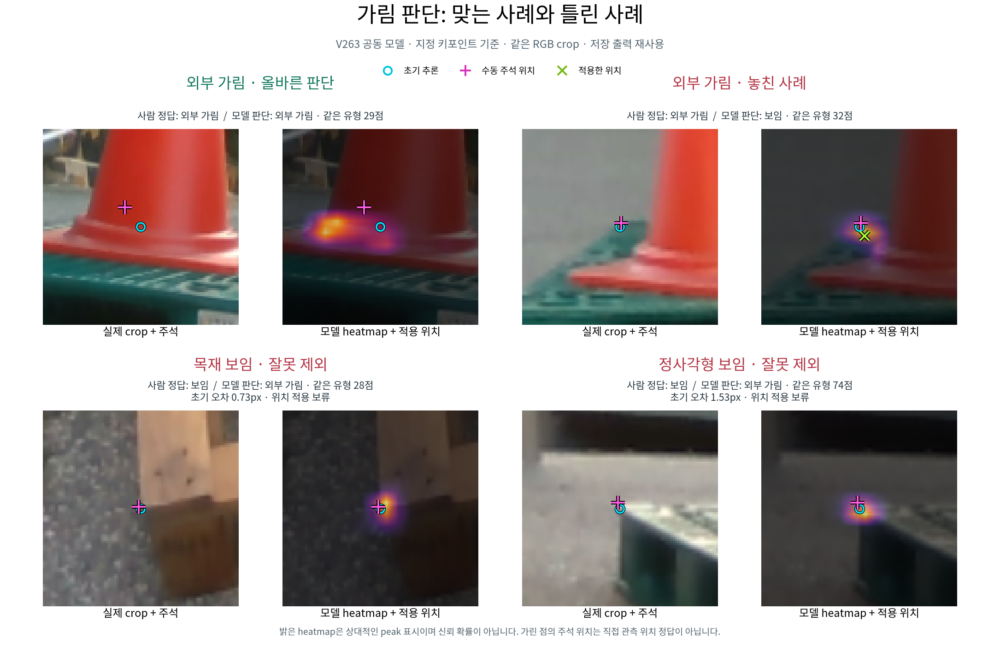
그림을 누르면 확대할 수 있습니다. 기존 고정12셀의 선택 규칙을 유지했고, 표시한 수는 각 셀의 전체 사례 수입니다.
실제 모서리 쪽으로 이동해 3px 안으로 복구 · 위치 오차 5.10→0.94px
셀 전체 114점 · SQUARE_YOLO:024410:native0

원래 맞던 점을 옮겨 3px 밖으로 악화 · 위치 오차 1.46→3.65px
셀 전체 20점 · SQUARE_YOLO:026868:native5
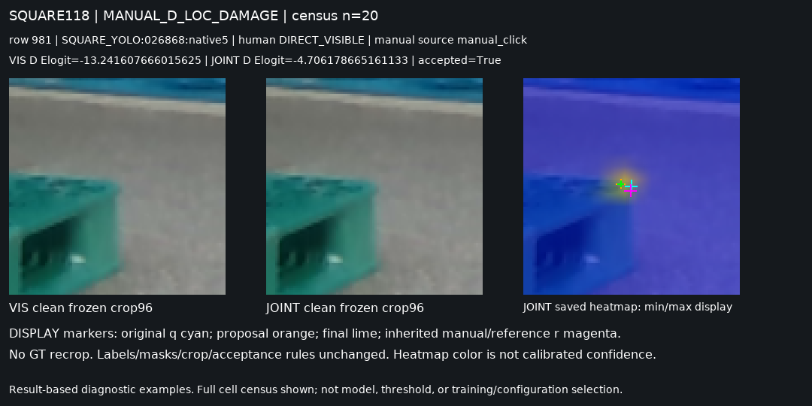
초기 오차를 줄이고 3px 안으로 복구 · 위치 오차 5.42→1.42px
셀 전체 26점 · wood_day_01:002010:native1
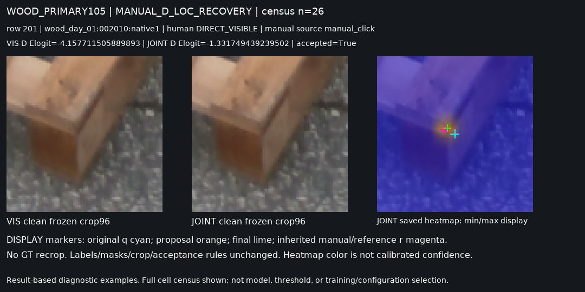
보임 판단은 맞지만 적용한 좌표가 악화 · 위치 오차 1.77→4.57px
셀 전체 39점 · wood_day_01:002010:native0
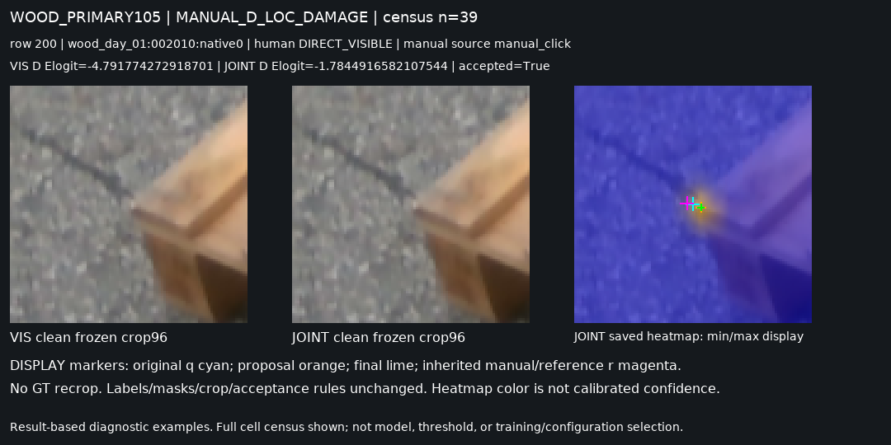
콘이 가린 점을 외부 가림으로 판별
셀 전체 29점 · SQUARE_YOLO:025162:native4
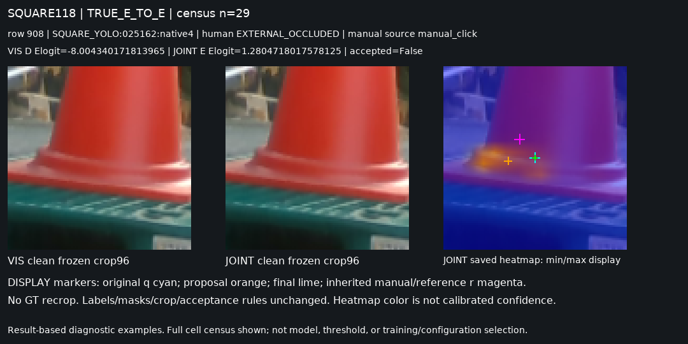
가린 점을 보임으로 판단하고 보정도 적용
셀 전체 32점 · SQUARE_YOLO:027085:native4
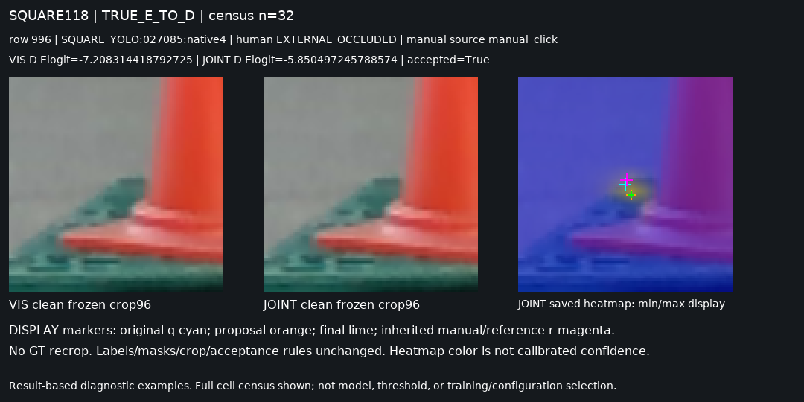
초기 오차 0.73px인 보이는 모서리를 외부 가림으로 판단 · 위치 오차 0.73→0.73px
셀 전체 28점 · wood_day_01:002497:native0
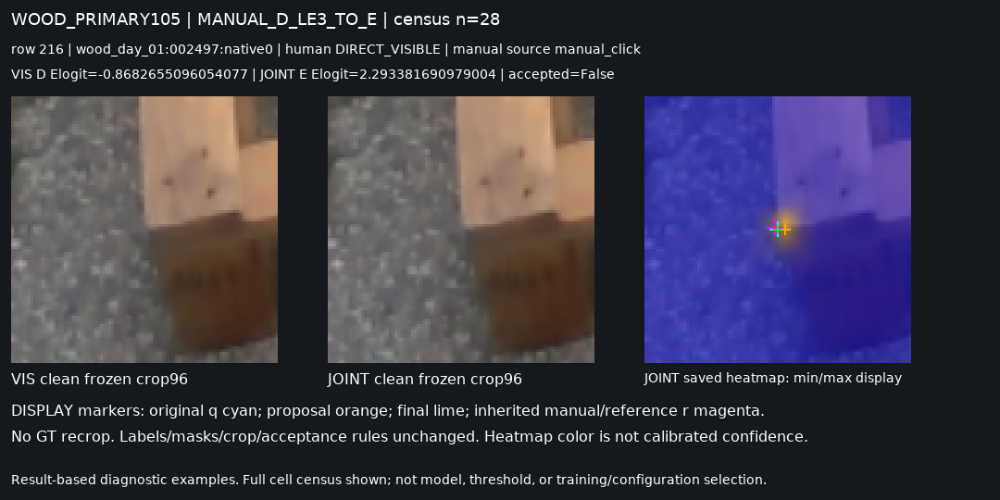
수동 보임 점을 외부 가림으로 판단 · 위치 오차 1.53→1.53px
셀 전체 74점 · SQUARE_YOLO:024276:native4
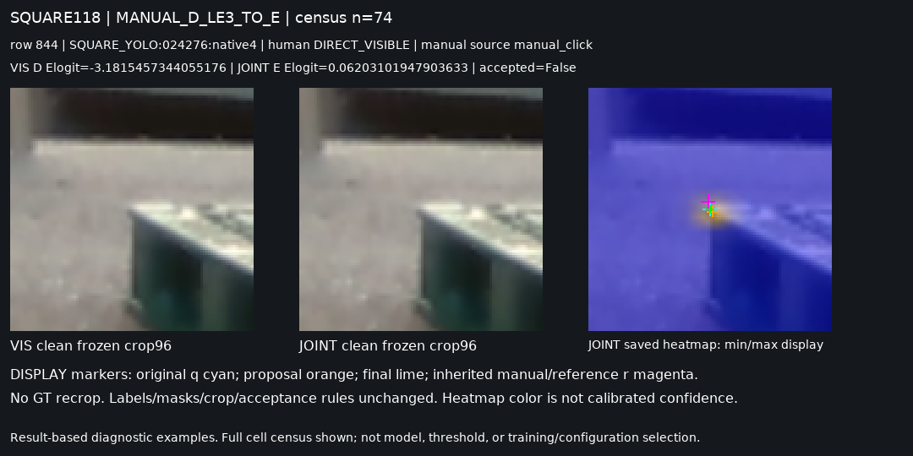
콘·바닥 crop에서 보임으로 판단하고 바닥 방향으로 보정
셀 전체 23점 · wood_day_01:004294:native0
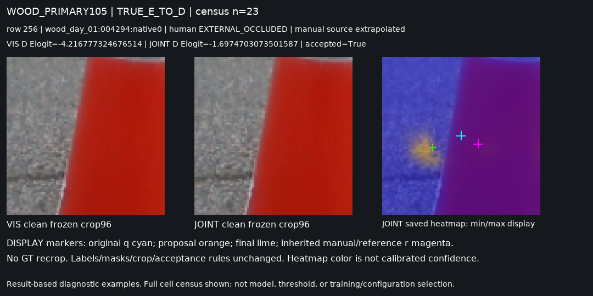
정사각형 복구 사례는 제안점이 사람이 찍은 모서리 쪽으로 움직입니다. 실패 사례에서는 주변 모서리나 경계에 peak가 있어도 해당 native 점의 직접 보임을 입증하지 못합니다. 목재 사례는 초기 오차가0.73px인데도 외부 가림으로 판별되어, 초기 좌표 오차만으로는 이 오류를 설명할 수 없습니다.
이는 선택 사례의 관찰입니다. 합성→실사 전이, 점 ID 대응, 공동 손실 중 어느 원인이 얼마나 기여했는지는 이 그림만으로 확정하지 않습니다. Heatmap 색은 보정된 신뢰 확률이 아닙니다.